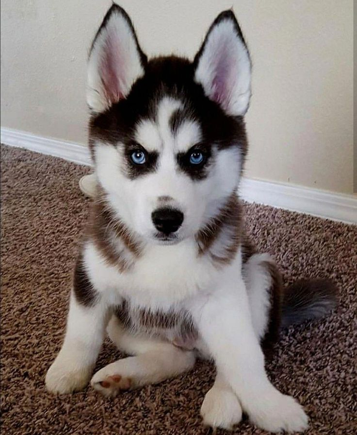
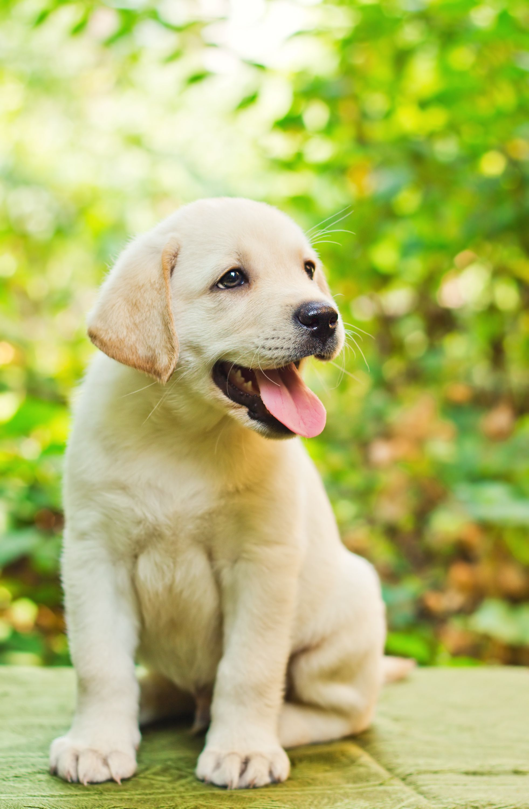
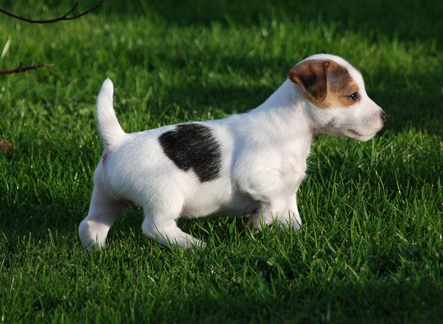
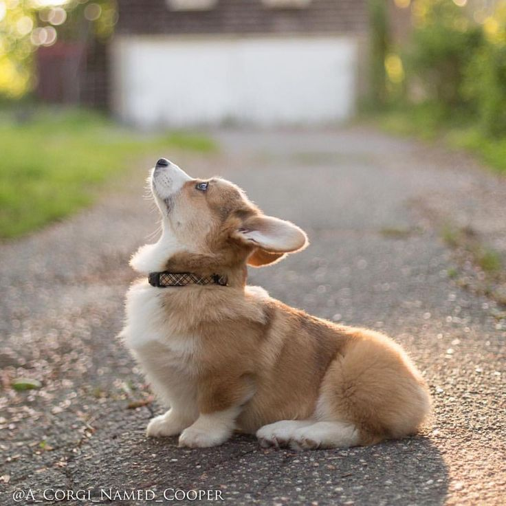
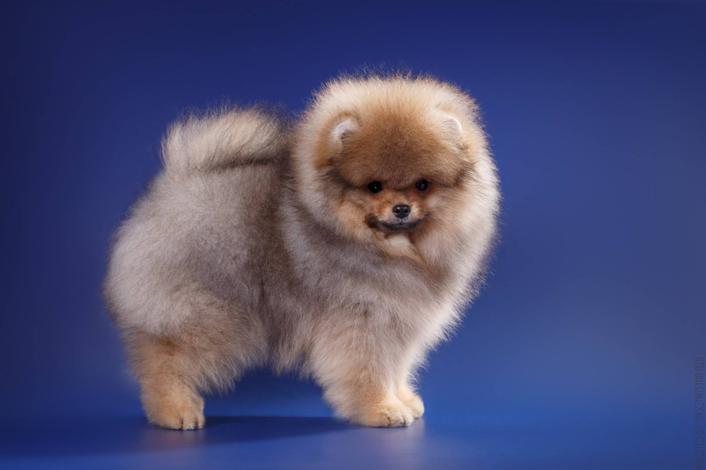
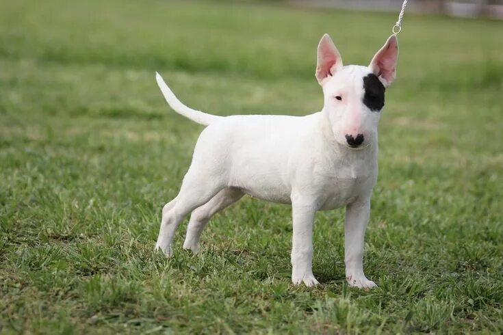
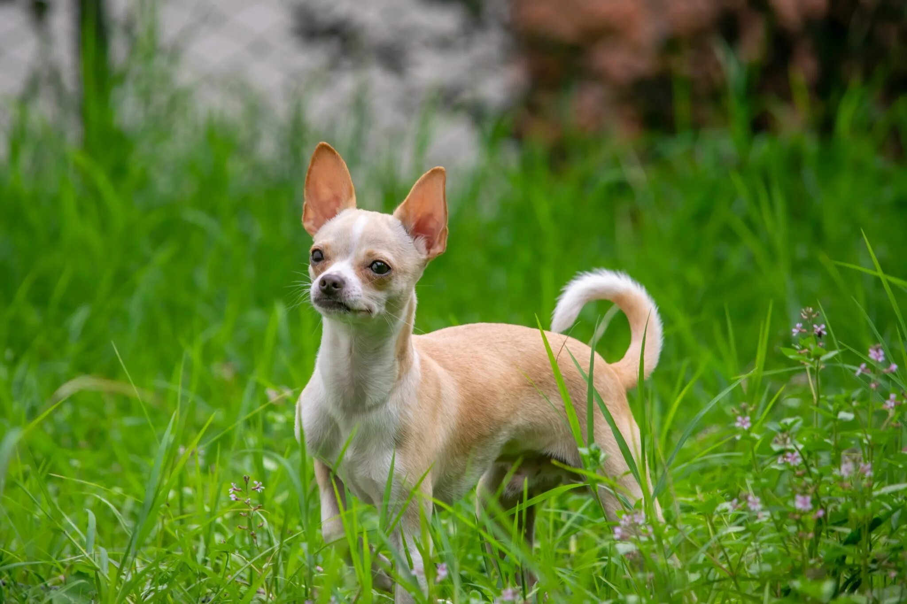
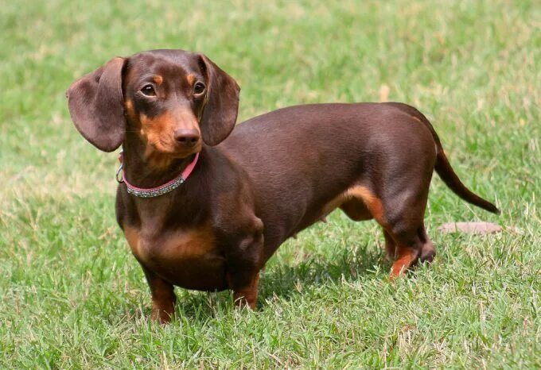

Хаски
Хаски — рабочая порода, известная своей выносливостью и дружелюбным характером. Эти собаки любят бегать и лучше всего чувствуют себя при активном образе жизни.
Родина: северные регионы Сибири и Чукотка; использовались чукчами как ездовые собаки. Хаски легко социализируются, подходят для семей, но требуют ежедневно 1–2 часа интенсивных прогулок или бега. По словам заводчиков, "хаски — это энергия в движении": им нужны задачи и движение. Заключение: если вы активный человек и готовы уделять собаке много времени, хаски станет отличным компаньоном. Источник: общие справочные материалы о породе.
Лабрадор
Лабрадор — одна из самых популярных семейных пород: добрые, легко обучаемые и ориентированные на человека собаки.
Родина: восточное побережье Канады (Ньюфаундленд/Лабрадор). Лабрадоры часто используются как собаки-помощники, поводыря и в спасательных службах — обучение и социализация начинают с щенячьего возраста. Они нуждаются в ежедневных прогулках и играх (обычно минимум 30–60 минут активной нагрузки). Заключение: отличная порода для семей с детьми и для людей, которым нужна обучаемая и послушная собака. Источник: обзор пород.
Джек Рассел
Джек рассел — маленький терьер с огромным запасом энергии и любопытством; подходит активным владельцам.
Родина: Англия, порода была выведена для норной охоты и работы с мелкой дичью. Джек рассел требует интенсивных физических и умственных нагрузок: ежедневные игры, тренировки и интеллектуальные задачи. Заводчики отмечают: "этот пес не выносит скуки" — при недостатке активности может проявлять упрямство и лай. Вывод: идеален для людей, которые много времени проводят на свежем воздухе и любят активные развлечения с собакой.
Корги
Корги — низкорослая, но выносливая порода, известная дружелюбием и отличным характером для семей с детьми.
Родина: Уэльс, Великобритания; изначально использовались как пастушьи собаки. Корги хорошо уживаются в квартире при условии регулярных прогулок и игровой активности. Они умны и быстро учатся, но иногда проявляют упрямство, поэтому важна последовательная дрессировка. Заключение: корги — отличный выбор для семей, которые хотят компактную, но живую и преданную собаку.
Шпиц
Шпиц (карликовые разновидности) — популярный декоративный компаньон с яркой внешностью и жизнерадостным характером.
Родина: центральная и северная Европа (немецкие корни породы). Шпицы активны и любят внимание; за их густой шерстью требуется регулярный уход (чистка и расчёсывание несколько раз в неделю). Из-за природы шпиц часто сигнализирует лаем, поэтому ранняя социализация поможет сделать поведение спокойнее. Вывод: шпиц — хороший выбор для тех, кто готов ухаживать за шерстью и любит живые, общительные породы.
Бультерьер
Бультерьер — мощная и мускулистая порода с характерной формой головы, требующая опытного хозяина и корректного воспитания.
Родина: Англия, порода сформировалась в XIX веке. Бультерьеры лояльны к семье и при правильной социализации очень ласковы, но нуждаются в твёрдой, доброжелательной дрессировке и ежедневной физической нагрузке. Заводчики и инструкторы по дрессировке советуют начинать обучение с щенячьего возраста и уделять внимание общению с другими собаками. Вывод: при ответственном подходе бультерьер — надёжный и преданный компаньон.
Чихуахуа
Чихуахуа — крошечная, но отважная порода, очень привязывающаяся к хозяину и любящая внимание.
Родина: Мексика; исторические корни породы уходят в древние культуры Центральной Америки. Чихуахуа подходят для жизни в квартире, но из-за маленького размера важно защищать их от травм и резких перепадов температуры. Эти собаки могут быть ревнивыми и требовать много ласки; регулярная социализация уменьшит проявления чрезмерной охраны территории. Вывод: идеальны для тех, кто хочет компактную, эмоционально близкую собаку.
Такса
Такса — смелая охотничья порода с характерным силуэтом; энергичная и преданная своим людям.
Родина: Германия; таксы были выведены для поиска и выманивания норной дичи. У них сильно выражено охотничье чутьё, поэтому прогулки и игры с запаховыми задачами будут полезны. Из-за длинного позвоночника важно избегать лишнего подъёма/прыжков и следить за весом собаки. Вывод: такса — отличный выбор для тех, кто хочет активную и характерную собаку, но готов соблюдать меры предосторожности для здоровья спины.